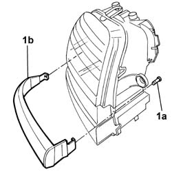

7055A65 Crossmember/rear trim MOULDING - Painting after Replacement.
- Path
- Procedures > 70 FITTINGS > 7055 MOULDING AND PROTECTION > 7055A exterior mouldings > 7055A65 Crossmember/rear trim MOULDING - Painting after Replacement.
- Kind
- repair procedure (removal / refitting; the operation number is the code)
- Applies to
- all engines; all production periods
- Interactive page
- https://sloeber94.github.io/elrnDB-fDbl/en/#/2585216
Applies to: all engines; all production periods
 Removing
Removing
 Refitting
RefittingPlace the car on a ramp.
Disconnect the battery negative terminal.
1. Undo the bolts (1a) and remove the trim (1b).

Applies to: all engines; all production periods
Refitting
RemovingPosition the trim in its seating on the lights cluster and secure it with its bolts.
Connect the battery negative terminal.
Remove the vehicle from the ramp.